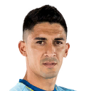

CHILE
La selección de fútbol de Chile, conocida como la Roja, término afianzado en los años 1980, es el equipo representativo de dicho país en las competiciones oficiales de fútbol, la tercera selección nacional más antigua de América y una de las veinte más antiguas del mundo

Sánchez

Hernández

Vargas
Vidal

Silva
Valdivia

Beausejour

Medel

Jara

Isla
Bravo
Juan Antonio Pizzi Torroija es un director técnico y ex futbolista argentino nacionalizado español.Su época de mayor éxito futbolístico tuvo lugar a mediados de los años 1990, cuando llegó a ganar el Trofeo Pichichi con el CD Tenerife y fue seleccionado para jugar la Eurocopa de 1996 y el Mundial de 1998 con la Selección de fútbol de España.